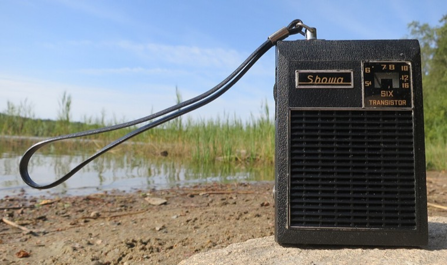

The work
Seven hands from our first two years. Every campaign gets its own card.
-
We put the microphones in the stands instead of a studio and built the club’s anthem out of what the fans were already singing. It was on every terrace before it was on any playlist.
77 Lo canta la grada Women’s football club, 2026 -
Positioning and launch for a bank built around women’s money. It opened with a full-page apology for everything banks had told its customers before. The whole strategy fitted on one card.
11 Lo sentimos. Challenger bank, 2025 -
A training shoe developed with a flamenco company and worn in on a tablao floor. We launched it with a live performance, filmed in one take, instead of an ad.
55 Zapateado Sportswear label, 2026 -
A summer campaign that put women over seventy behind the decks in villages across Spain. They chose the songs; we built the films, the posters and a pop-up radio station around them.

33 La abuela pincha Telecom brand, 2025 -
Outdoor media bought by the forecast: the posters only went live in cities where it was raining. Handmade umbrellas, handmade media plan.
 22
Solo si llueve
Umbrella maker, 2025
22
Solo si llueve
Umbrella maker, 2025
-
Instead of another weekend in a field, the festival toured village squares on a stage built into a truck. Same line-up, and an audience that had never been to a festival.
 44
En tu pueblo
Music festival, 2026
44
En tu pueblo
Music festival, 2026
-
A campaign that was also a company policy. The brand closed its own offices from two to four, invited every employer in Spain to do the same, and published the list of those who did.
66 De 2 a 4, cerrado Mattress brand, 2025
Every hand on the table
Seven campaigns, four suits. Most of them needed a sota of strategy and a rey of craft at the same time.
22
Solo si llueve
Umbrella maker, 2025
44
En tu pueblo
Music festival, 2026